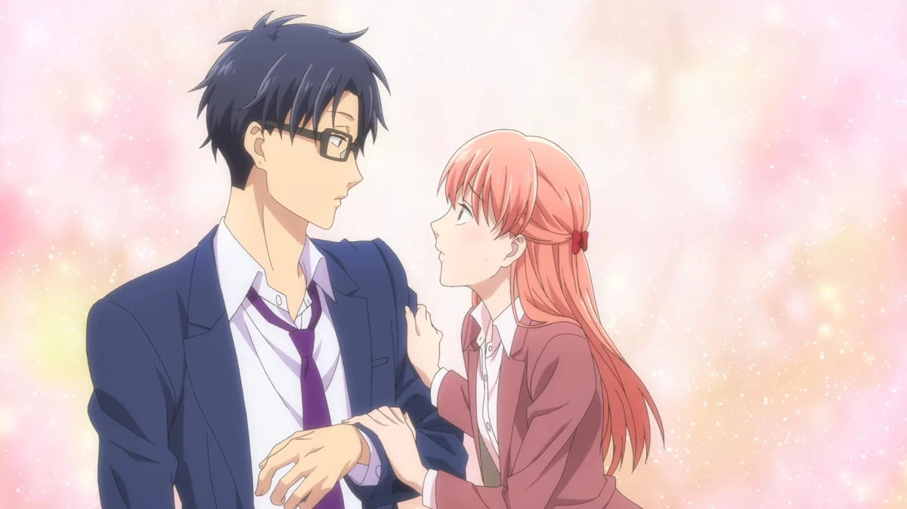
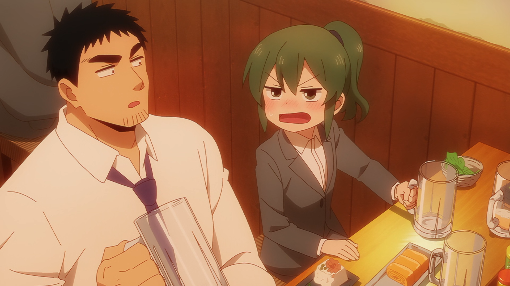
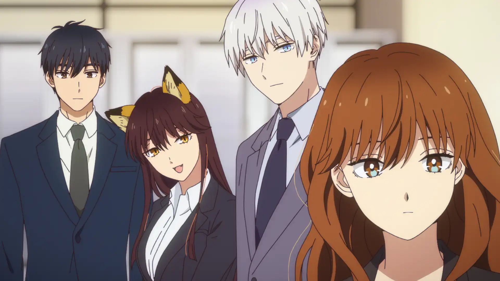
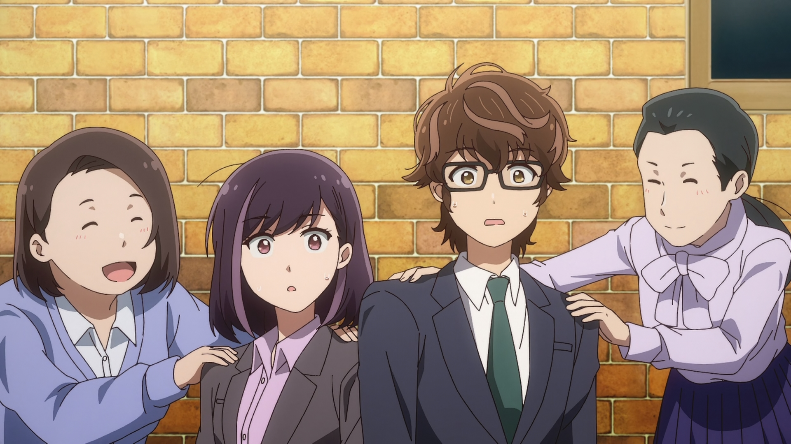
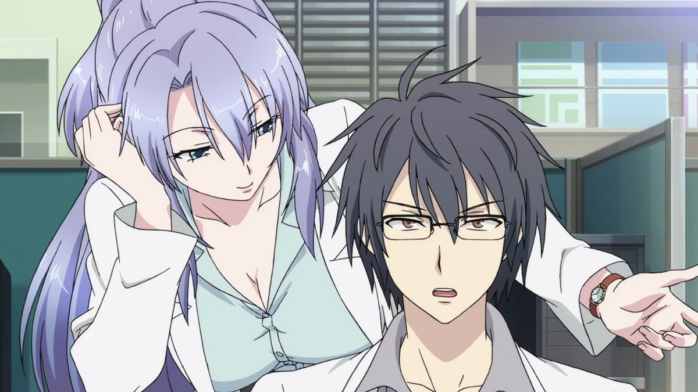
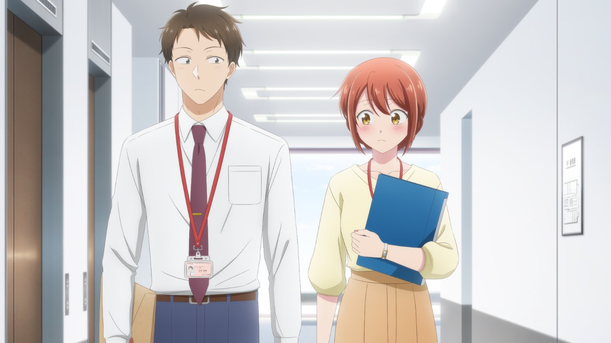
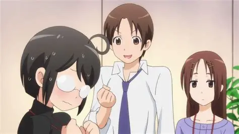
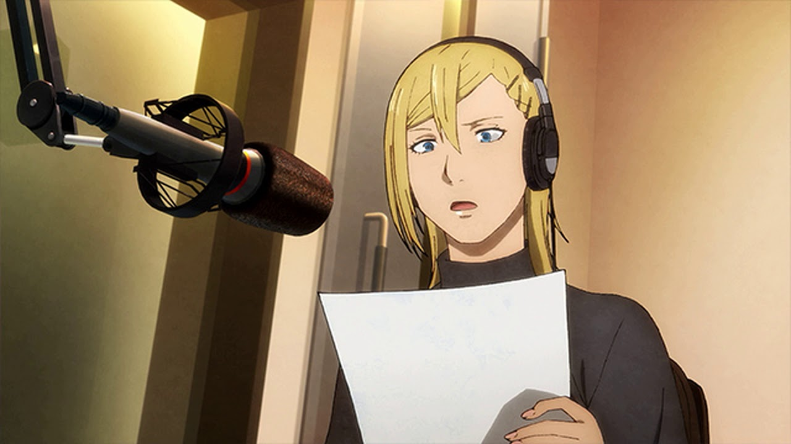
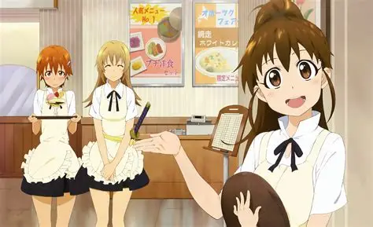

SMASH Senpai
Top 10 Workplace Romance Anime (No High School, Just Adult Love)
Not all romance happens in classrooms. Some love stories begin after clocking in, during lunch breaks, late-night shifts, and awkward office meetings.
Workplace romance anime focus on adult relationships — people with jobs, responsibilities, deadlines, and emotional baggage. Love isn’t the only priority. Careers, finances, and personal growth matter too.
These anime explore the tension between professionalism and emotion. Secret crushes. Office gossip. Power dynamics. Balancing work life and personal feelings without crossing lines.
Unlike high school romance, workplace love feels grounded. Confessions are hesitant. Relationships move slower. Mistakes carry consequences. And feelings don’t disappear after graduation.
If you’re looking for romance anime with adult characters, real jobs, and love that grows naturally over time, these are the Top 10 Workplace Romance Anime — no classrooms, no school uniforms, just adult love.
Sponsored
#1 Wotakoi: Love Is Hard for Otaku
Wotakoi is the gold standard for adult workplace romance anime. No high school classrooms. No exaggerated misunderstandings. Just grown adults trying to balance work, relationships, and deeply ingrained hobbies.
The story follows Narumi and Hirotaka, childhood friends who reunite at the same office job. Both are hardcore otaku, hiding their interests behind professional smiles. When Narumi’s secret nearly gets exposed, Hirotaka offers a blunt solution — why not just date?
What makes Wotakoi special is how casual and realistic the romance feels. There’s no dramatic confession arc. No fireworks. Just two adults deciding that companionship, comfort, and shared understanding matter more than romance clichés.
The anime explores how adult relationships actually work. Dates are replaced by gaming nights. Conversations happen between deadlines and meetings. Love grows quietly, through reliability rather than grand gestures.
Wotakoi also shines because it doesn’t focus on just one couple. Side relationships show different stages of adult love — long-term dating, emotional distance, and the fear of stagnation. It understands that romance doesn’t end once you start working.
This anime feels comforting because it respects adulthood. It says love doesn’t have to be dramatic to be meaningful — sometimes, it’s enough to be understood.
- Episode count: 11 + OVA
- Genre: Workplace Romance, Comedy
- Known for: Relatable adult relationships
- Core theme: Love that fits real life

play anime smash or pass here (not sponsored)
SMASH SENPAI – Smash or Pass#2 My Senpai Is Annoying
My Senpai Is Annoying looks like a fluffy comedy, but underneath, it’s a surprisingly honest workplace romance. One that understands how affection develops slowly between coworkers.
Futaba is a hardworking office employee constantly frustrated by her loud, overbearing senior, Takeda. He’s supportive, kind, and always watching out for her — even when she insists he’s just annoying.
The brilliance of this anime lies in its pacing. There’s no rush to label feelings. Instead, attraction creeps in through shared lunches, late nights at the office, and moments of quiet support. It feels earned, not forced.
Workplace romance here is portrayed with care. Professional boundaries exist. Embarrassment feels real. Small gestures — remembering a preference, standing up for someone, walking home together — carry emotional weight.
The anime also benefits from its strong side couple, showing a more mature, straightforward relationship. Together, both romances present different approaches to adult love — awkward discovery and confident mutual understanding.
My Senpai Is Annoying succeeds because it captures the warmth of being cared for without losing independence. It reminds viewers that love at work doesn’t have to be dramatic — sometimes it’s just someone always having your back.
- Episode count: 12
- Genre: Workplace Romance, Slice of Life
- Known for: Slow-burn chemistry
- Core theme: Comfort turning into love
Sponsored
#3 The Ice Guy and His Cool Female Colleague
The Ice Guy and His Cool Female Colleague blends gentle fantasy with an incredibly soft, adult workplace romance. It’s quiet, slow, and emotionally delicate.
Himuro is an office worker descended from snow spirits. Whenever his emotions overflow, the temperature drops, and snow fills the air. His colleague Fuyutsuki is calm, kind, and quietly attentive — the perfect contrast to his hidden anxiety.
Unlike loud romcoms, this anime thrives on silence. Long pauses. Shared glances. Soft concern. The romance grows not through words, but through presence.
The workplace setting feels natural. Projects, meetings, after-work conversations — everything grounds the fantasy in adult routine. Love develops the way it often does in real offices: gradually, cautiously, and with respect.
What truly elevates the story is its emotional restraint. Both characters are shy, unsure, and afraid of misunderstanding each other. Their feelings aren’t explosive — they’re fragile. That vulnerability makes every small moment feel meaningful.
This anime is perfect for viewers who enjoy slow, healing romance. It doesn’t rush toward confession. Instead, it lets affection settle naturally, like snow falling quietly outside the office window.
- Episode count: 12
- Genre: Workplace Romance, Fantasy, Slice of Life
- Known for: Soft atmosphere, emotional subtlety
- Core theme: Quiet love and emotional safety
#4 365 Days to the Wedding
365 Days to the Wedding is a workplace romance built on anxiety, social pressure, and the fear of life-changing decisions. It’s not loud. It’s not dramatic. It’s painfully relatable.
The story follows Takuya and Rika, two quiet office workers who prefer stability over attention. When their company announces a relocation policy that threatens their comfortable lives, they come up with a desperate solution — pretend to be engaged.
What begins as a practical lie slowly forces them to confront emotions they’ve been avoiding. The fake relationship creates moments of closeness that neither of them knows how to process. It’s awkward, uncomfortable, and deeply human.
This anime excels at portraying adult introversion. Both leads struggle with communication, social expectations, and the pressure to conform. Romance doesn’t bloom through confidence — it grows through shared vulnerability.
The workplace setting amplifies the tension. Office gossip, social events, and quiet desk conversations turn the fake engagement into an emotional minefield. Every interaction carries unspoken questions.
365 Days to the Wedding resonates because it understands how adulthood works. Love isn’t always about passion — sometimes it’s about choosing someone who makes life feel less overwhelming.
- Episode count: 12
- Genre: Workplace Romance, Slice of Life
- Known for: Fake engagement realism
- Core theme: Quiet people learning to choose love
Sponsored
#5 Science Fell in Love, So I Tried to Prove It
Science Fell in Love, So I Tried to Prove It takes workplace romance and filters it through logic, data, and absolute emotional denial. It’s absurd — but strangely insightful.
The story centers on two graduate researchers working in the same laboratory. When one confesses her feelings, the response isn’t rejection — it’s experimentation. Love must be proven scientifically, through measurable data.
What makes this anime work is how it uses comedy to explore emotional immaturity in highly intelligent adults. These characters understand equations, but not their own hearts. Romance becomes a research project because vulnerability feels terrifying.
The workplace environment adds to the humor. Experiments replace dates. Data replaces feelings. Yet, beneath the charts and theories, genuine affection slowly leaks through.
The anime also explores how adults rationalize emotions. Fear of rejection, loss of control, and emotional exposure are hidden behind logic. It’s exaggerated, but uncomfortably accurate.
Science Fell in Love succeeds because it understands that love isn’t logical — and trying to force it to be only proves how human we are. It’s workplace romance for people who think too much.
- Episode count: 24 (2 seasons)
- Genre: Workplace Romance, Comedy
- Known for: Logic vs emotion humor
- Core theme: Love can’t be quantified
#6 I Have a Crush at Work
I Have a Crush at Work is one of the most understated workplace romance anime on this list. It doesn’t rely on gimmicks, fantasy, or exaggerated comedy. It lives entirely in small moments.
The story follows coworkers navigating unspoken attraction in a professional environment. There’s no dramatic confession. No obvious turning point. Just quiet longing hidden behind daily routines.
What makes this anime resonate is its honesty. Many adults experience attraction at work — and choose silence. Fear of rumors, rejection, or workplace complications keeps emotions locked away.
The anime captures the emotional weight of those suppressed feelings. A shared elevator ride. A brief conversation. Eye contact held a second too long. These moments become everything.
The workplace setting feels grounded and realistic. Characters remain professional, even as emotions slowly build. Romance isn’t disruptive — it’s internal. That restraint makes the story hit harder.
I Have a Crush at Work is perfect for viewers who appreciate subtle storytelling. It reminds us that some of the most intense romances never start with a confession — they start with awareness.
- Episode count: 12
- Genre: Workplace Romance, Slice of Life
- Known for: Emotional subtlety
- Core theme: Feelings left unspoken
Sponsored
#7 Servant x Service
Servant x Service takes workplace romance into one of the least romantic settings imaginable — a government office. And that’s exactly why it works so well.
The anime follows a group of civil servants navigating bureaucracy, paperwork, and painfully slow routines. Among them is Lucy, a soft-spoken woman who joined the office for a deeply personal reason. Her emotional baggage quietly shapes how she interacts with others.
Romance in Servant x Service develops naturally through daily interaction. Shared frustrations. Casual conversations. Mutual understanding. Love isn’t dramatic — it grows from familiarity.
What sets this anime apart is how adult it feels. Characters don’t idealize work. They’re tired. Confused. Sometimes unmotivated. Romance becomes a comfort, not an escape.
The humor is dry, often poking fun at workplace inefficiency and authority. Yet beneath the comedy is a sincere look at how people connect when forced to spend most of their lives together.
Servant x Service proves that romance doesn’t need glamour. Sometimes, love begins between stacks of documents and shared sighs at the end of a long workday.
- Episode count: 13
- Genre: Workplace Romance, Comedy
- Known for: Office realism, dry humor
- Core theme: Love growing from routine
#8 Wave, Listen to Me!
Wave, Listen to Me! is chaotic, loud, emotionally raw — and unapologetically adult. This is workplace romance mixed with personal breakdowns, impulsive decisions, and self-destruction.
The story centers on Minare, a woman whose life is spiraling. After a bad breakup and questionable choices, she accidentally finds herself working as a late-night radio host. Her workplace becomes a stage for emotional honesty.
Romance here is messy. Feelings aren’t clean. Attraction collides with unresolved trauma and personal flaws. Minare doesn’t behave like a typical romance lead — she’s impulsive, defensive, and brutally honest.
The workplace setting feels alive. Radio production, deadlines, and live broadcasts constantly pressure the characters. Relationships form not because it’s convenient, but because emotions spill out.
What makes this anime special is its refusal to sanitize adulthood. People make bad choices. They say the wrong thing. Romance becomes another complication, not a solution.
Wave, Listen to Me! is for viewers who want workplace romance that feels unpredictable, loud, and painfully human — just like real life.
- Episode count: 12
- Genre: Workplace Drama, Romance
- Known for: Unfiltered adult protagonist
- Core theme: Chaos before clarity
#9 Working!
Working! is one of the most iconic workplace romance anime, blending comedy, eccentric coworkers, and surprisingly sincere relationships. Beneath the humor, there’s real emotional progression.
Set in a family restaurant, the anime follows a cast of wildly different personalities. From social anxiety to explosive tempers, everyone carries something personal into the workplace.
Romance develops slowly through repetition. Same shifts. Same coworkers. Same conversations. Feelings emerge naturally as characters become comfortable around each other.
The comedy is exaggerated, but the emotional beats aren’t. Characters learn boundaries, communication, and emotional responsibility. Love isn’t instant — it’s earned over time.
The workplace becomes a second home. Conflicts happen, misunderstandings arise, but growth follows. Romance here feels like a byproduct of shared experience.
Working! proves that even the silliest environments can produce meaningful connections. It’s workplace romance that feels warm, earned, and incredibly rewatchable.
- Episode count: 39 + specials
- Genre: Workplace Romance, Comedy
- Known for: Ensemble cast
- Core theme: Love through familiarity
#10 My Tiny Senpai

My Tiny Senpai is a gentle, comforting workplace romance built around small gestures and emotional safety. It’s not about drama — it’s about warmth.
The story follows a young office worker and his kind senior colleague. Their relationship isn’t fueled by misunderstandings or tension, but by reassurance, support, and daily kindness.
What makes this anime appealing is its softness. Romance develops through encouragement, shared lunches, and quiet moments that ease workplace stress. It feels healing.
The office environment is calm and relatable. Characters deal with deadlines, mistakes, and pressure — but never lose empathy. Love becomes a source of stability.
Unlike high-drama romances, My Tiny Senpai focuses on emotional security. The relationship grows because both characters feel safe being themselves.
As a closing entry, this anime leaves viewers with a sense of comfort. It reminds us that workplace romance doesn’t always need conflict — sometimes, kindness is enough.
- Episode count: 12
- Genre: Workplace Romance, Slice of Life
- Known for: Wholesome tone
- Core theme: Emotional reassurance
Play Smash or Pass on SMASH Senpai.
 PLAY SMASH OR PASS
PLAY SMASH OR PASS